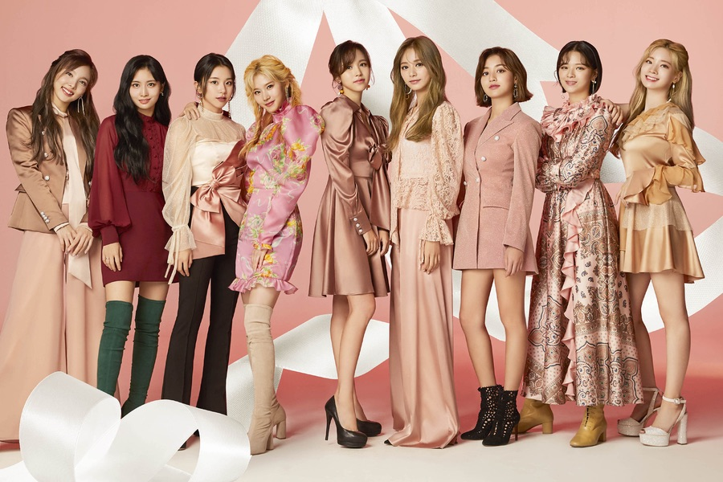

TWICE is a female Korean pop group consisting of nine members under JYP Entertainment. They debuted in 2015 and have been together ever since. They have released four studio albums, two compilation albums, four reissues, nine extended plays, one compilation extended play, and twenty seven singles as of now, and are the highest-selling girl group in South Korea.
On May 5, 2015, The reality girl group show Sixteen first aired. This show pitted sixteen female trainees from the JYP Entertainment company against each other in order to earn a spot in the new girl group TWICE.
The show not only tested the girls' singing and dancing talents, but also tested their personality and charisma. Their missions and challenges ranged from performing to photoshoots.
On July 7, 2015, the final line up of TWICE is revealed. Originally, there were supposed to be seven winners, which consisted of Nayeon, Jeongyeon, Sana, Jihyo, Mina, Dahyun, and Chaeyoung. However, two members were added: Momo, chosen by the CEO JYP himself, and Tzuyu, chosen by the voters.
TWICE is no stranger to music awards. They have 113 music show wins, making them the second girl group to achieve this milestone. They have been nominated for 263 awards and won 108 of them. Additionally, they are the only artist to have won the Mnet Asian Music Awards's "Song of the Year" award 3 times (In 2016, with "Cheer Up", 2017 with "Signal", and 2018 with "What is Love") as of 2020.